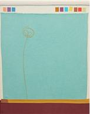
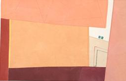

정지은
작가의 말
그림의 색은 가장 시각적인 원천이다.
작가에게 색이란 예술을 표현하는 가장 중요한 매개체임과 동시에 본인 작품의 본질을 내포하고 있다. 작품에서 중요시 하는 것 중 하나는 발색이다.
탁해 보이지 않도록 맑은 색감을 내기위해 제한된 염료로 조색하여 염색한다.
작업과정은 반복과 기다림의 연속이다. 작업실 한켠 천을 널어둔 모습을 보면 침참해 있던 감정이 깨어나 올라오는 듯한 느낌을 받는다.
생각해보면 나는 주로 일상에서 기억에 남는 풍경을 그림에 다시 재현하는 것 같다.
우중충한 마음에 하늘을 올려다봤을 때 청명하고 높던 하늘, 길모퉁이 돌 담 사이로 작지만 힘차게 피어오르는 새싹, 어둠 속 밝고 따뜻하게 느껴졌던 빛줄기, 차가운 풍경의 느낌보단 익숙한 정겨운 감성들. 때론 이 모든 일상풍경이 나에겐 기분 좋은 에너지를 준다.
요즘 대중들에게 컬러 테라피가 유행처럼 번지고 있다. 색채는 시신경을 자극하여 대뇌로 전달되고 이 과정이 심리적 역할을 하는 방법이 있다고 한다.
색채가 주는 안도감은 스트레스 해소에 도움이 되고 자연에서 빛을 쐬는 것이 좋지만, 야외에서 시간을 보내기 어려운 사람들은 10분정도 자연색을 바라보는 것이 도움이 된다는 기사를 읽었다. 색이 우리에게 주는 영향력은 점차 비중이 커짐과 동시에 중요한 역할을 하고 있다.
이처럼 색이 주는 치유의 능력은 작가의 그림에서도 자연색에 가까운 여러 면들의 단순화된 색면 형태를 통해 나타나지고 있다. 자연색은 우리에게 긍정의 힘과 생명력이 가득한 생기와 기운을 담아내고 있다. 각기 다른 의미들 속 구성된 색면이 화폭을 가득 메운다. 대부분 경쾌하고 화사한 느낌 가득 찬 작품들이다. 색면을 바라보며 색의 깊이를 통해 잔잔한 울림이 들리는 듯하다.
작품과 공유가 이루어지면 색다른 경험이 시작된다. 눈에 보이지 않는 것이 상상될 때 공감이 시작된다. 내 그림은 내 스스로에게 위로가 된다. 그림은 나의 치유작업이기 때문이다. 작가가 먼저 치유 받은 그림은 관객에게 치유의 마법을 전해준다.


-천으로 만듦